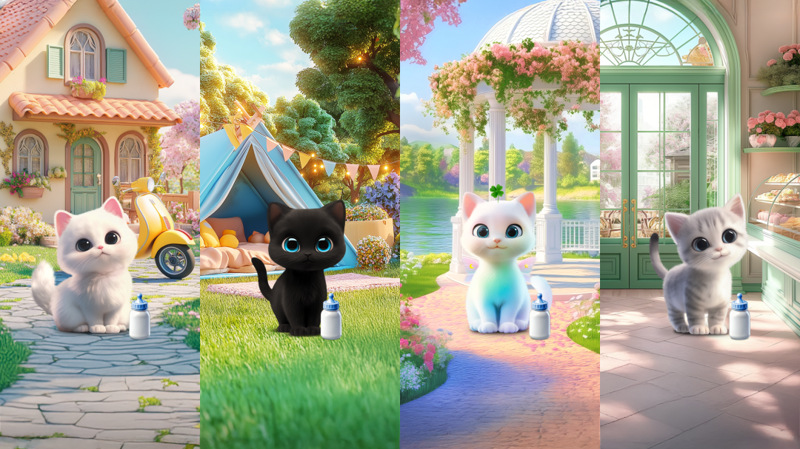
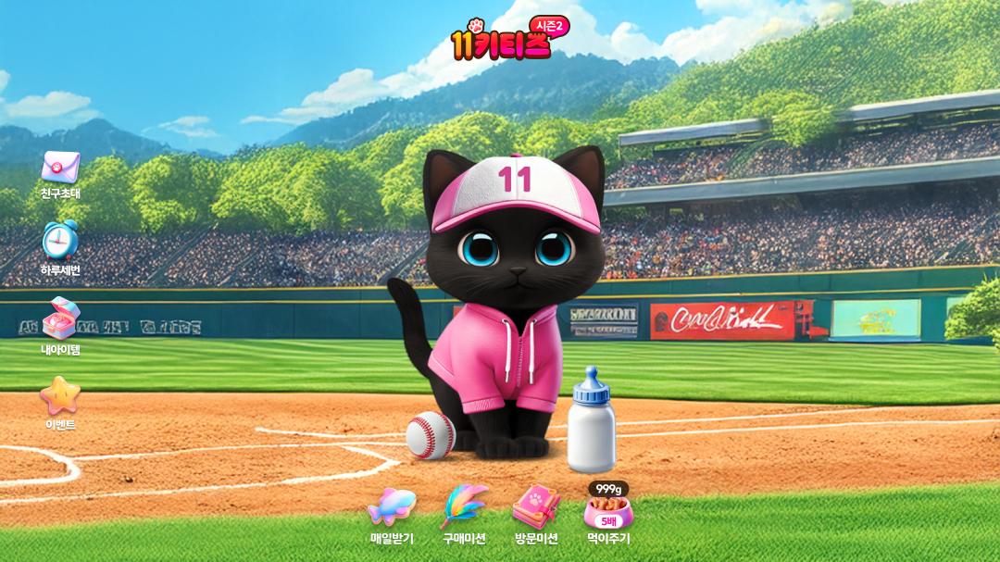
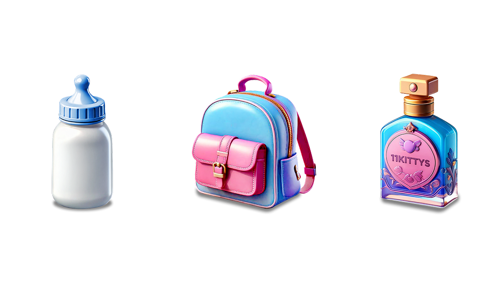
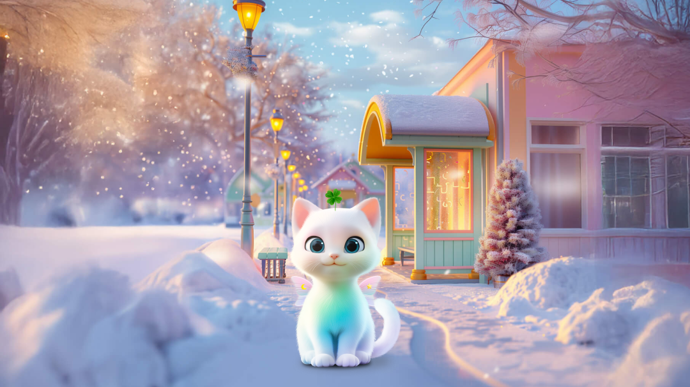

11KittiesSeason 2
+ 11KittiesSeason 2 는 고객 피드백을 반영해 선택·성장·보상 경험을 강화한 참여형 게임 프로젝트예요.
+ AI 기반 비주얼 제작과 보상 구조 개선을 통해 더 빠르고 몰입감 있는 ‘랜선 집사’ 경험을 설계했어요.

Character Choice — 시즌2는 시즌1의 기본 구조를 바탕으로 고객 피드백을 반영해 사용자가 직접 고양이를 선택하고 키우는 경험을 확대했어요. 4마리의 주요 캐릭터와 히든 캐릭터까지 직접 선택할 수 있게 구성해 개인 취향을 강화했고, Midjourney·Stable Diffusion을 활용해 입체적이고 게임처럼 몰입되는 배경으로 시각 자산의 품질을 높였어요. 이를 통해 ‘랜선 집사’로서의 감정 이입이 자연스럽게 이어지도록 설계했어요.

Event Focus — 그랜드 십일절 이벤트와 연계해 시그니처 컬러와 시각적 강조 요소를 강화했어요. 야구장 배경과 분홍색 포인트 아이템은 통일감을 주면서도 이벤트의 즐거움을 높였고, 아이템을 얻는 순간에는 배경 전환과 파티클 효과로 보상 느낌을 강화했어요. 시즌2는 보상 주기를 줄이고 횟수를 늘려 사용자가 더 빠르게 보상을 경험할 수 있도록 구조를 개선했어요.

Growth Story — 시즌2에서는 캐릭터의 성장 구조를 유아기 → 청소년기 → 성년기로 보여주어 사용자가 스스로 키우고 있다는 느낌을 강화했어요. 단계마다 상징적인 아이템을 제작해 성장 흐름을 쉽게 이해할 수 있도록 했고, 성장 과정 자체가 또 하나의 보상처럼 느껴지도록 구성했어요. 또한, 여러 마리를 모두 키워야 보상을 받던 방식에서 벗어나 한 마리씩 키울 때마다 바로 보상을 받을 수 있도록 개선해 만족도를 높였어요.

Easy UI — 메인 UI는 미션 중심 구조에서 수집·보상 중심으로 바꿨어요. 각 아이템과 성장 요소가 한눈에 보이도록 정리해 읽기 편하게 만들었고, 불필요한 요소를 줄여 화면 피로도를 낮췄어요. 메뉴는 사용자가 자주 쓰는 흐름에 맞춰 다시 배치해 꼭 필요한 정보만 빠르게 확인할 수 있게 했어요. 이를 통해 복잡한 미션 수행 부담보다, 내가 무엇을 모았고 어떤 보상을 받을 수 있는지 바로 이해할 수 있도록 설계했어요.